1. Propagation de la lumière
Dans un milieu transparent et homogène, la lumière se propage en ligne droite.
Un rayon lumineux est une droite orientée (flèche = sens de propagation).
Qu'observer ? Compare à chaque fois l'ombre portée sur l'écran : sa présence, sa netteté et son intensité. Relie ensuite ce que tu vois au modèle du rayon lumineux : une ombre se forme uniquement là où les rayons sont arrêtés — totalement (opaque), partiellement (translucide) ou pas du tout (transparent).
Utilise l'animation ci-dessus (clique sur Opaque / Translucide / Transparent) pour répondre aux 3 questions.
La vitesse dépend du milieu. Dans le vide, la célérité est maximale.
Qu'observer ? Repère le moment où l'éclair apparaît, puis celui où le tonnerre se fait entendre : il y a un délai entre les deux. Recommence avec une distance différente et compare les délais obtenus au résultat affiché.
Utilise l'animation ci-dessus (règle la distance, déclenche l'éclair) pour répondre aux 3 questions.
L'indice n est le rapport entre la vitesse de la lumière dans le vide et sa vitesse dans le milieu :
| Milieu | Indice n | v = c/n (m·s⁻¹) |
|---|---|---|
| Air | ≈ 1,00 | ≈ 3,00 × 10⁸ |
| Eau | 1,33 | ≈ 2,26 × 10⁸ |
| Plexiglas | 1,49 | ≈ 2,01 × 10⁸ |
| Verre ordinaire | ≈ 1,50 | ≈ 2,00 × 10⁸ |
Qu'observer ? Repère lequel des deux points arrive en premier, et comment sa couleur se rapproche du rouge quand l'indice n augmente. Utilise ⏹ Stop pour figer la course et comparer précisément les deux positions, puis ▶ Démarrer pour la relancer depuis le départ.
Aucun milieu ne fait aller la lumière plus vite que dans le vide : on a toujours v ≤ c, donc n = c / v ≥ 1. Comme n est le rapport de deux vitesses (deux grandeurs de même dimension), c'est un nombre sans dimension (sans unité).
Utilise l'animation ci-dessus (choisis un milieu, lance la course) pour répondre aux 3 questions.
2. Les lois de Snell-Descartes
Le rayon incident, la normale au dioptre au point d'incidence I, le rayon réfléchi et le rayon réfracté sont tous dans le même plan, appelé plan d'incidence.
La normale est la droite perpendiculaire à la surface séparatrice (dioptre) au point d'incidence I.
ILLUSTRATION · Le plan d'incidence — vue en perspective
Le rayon réfléchi reste dans le milieu incident. L'angle de réflexion est égal à l'angle d'incidence (tous deux mesurés par rapport à la normale). Le rayon réfléchi et le rayon incident sont de part et d'autre de la normale, dans le plan d'incidence.
Qu'observer ? Regarde comment l'angle de réflexion ir évolue en même temps que i1 — compare les deux valeurs affichées à chaque position du curseur, et vérifie qu'elles restent toujours égales, quel que soit l'angle choisi.
ILLUSTRATION interactive · Loi de réflexion : ir = i1
Utilise l'animation ci-dessus (déplace le curseur i1) pour répondre aux 3 questions.
Le rayon réfracté passe dans le second milieu. Les angles d'incidence i1 et de réfraction i2, mesurés par rapport à la normale, vérifient la relation ci-contre. Le rayon réfracté et le rayon incident sont de part et d'autre de la normale, dans le plan d'incidence.
Si n1 < n2 → i1 > i2 : le rayon se rapproche de la normale (milieu plus réfringent)
Si n1 > n2 → i1 < i2 : le rayon s'éloigne de la normale (milieu moins réfringent)
Qu'observer ? Compare i1 et i2 selon que n2 est plus grand ou plus petit que n1. Essaie ensuite d'augmenter i1 avec n1 > n2 jusqu'à faire apparaître l'avertissement « Réflexion totale interne » : note l'angle limite affiché.
Utilise l'animation ci-dessus (déplace les curseurs i1, n1, n2) pour répondre aux 3 questions.
3. Dispersion de la lumière et spectres lumineux
Lumière polychromatique
Mélange de plusieurs radiations. La lumière blanche est polychromatique. Un prisme la décompose : c'est la dispersion. La figure obtenue est le spectre continu.
Lumière monochromatique
Une seule radiation (une seule longueur d'onde λ). Un prisme la dévie sans la décomposer. Exemple : un laser rouge.
Spectre électromagnétique — IR · Visible · UV
≫ 750 nm
≪ 400 nm
Rayonnement thermique : tout corps chaud émet de l'IR. Utilisé en thermographie, télécommandes, lunettes de vision nocturne et en spectroscopie moléculaire.
Très énergétique (E = hc/λ). Provoque la fluorescence, stérilisation bactéricide, synthèse de vitamine D. Filtré en partie par l'ozone atmosphérique.
Qu'observer ? Compare le faisceau de sortie dans les deux modes, puis en mode « Blanche » repère quelle couleur est la plus déviée et laquelle l'est le moins. Fais varier l'angle du prisme et le matériau pour voir leur effet sur la dispersion.
Utilise l'animation ci-dessus (change le type de lumière, teste plusieurs couleurs) pour répondre aux 3 questions.
Cette simulation interactive permet de visualiser la dispersion par un prisme.
- Spectre continu : émis par un corps chaud. Quand T augmente → spectre enrichi vers le bleu (courtes λ). Un corps émet d'autant plus de lumière qu'il est chaud.
- Spectre de raies : émis par un gaz d'atomes excités à basse pression. Raies caractéristiques = signature spectrale du gaz.
Qu'observer ? En mode continu, regarde comment la couleur d'ensemble et la répartition de l'intensité changent avec T. En mode raies, compare la position (longueur d'onde) et la couleur des raies d'un élément à l'autre : c'est cette « signature » qui permet d'identifier un élément chimique dans un spectre inconnu.
Utilise l'animation ci-dessus (change de mode, de température, d'élément) pour répondre aux 3 questions.


L'analyse spectrale permet d'identifier des ions métalliques en chimie.
4. Réception de la lumière — Lentilles & modèle de l'œil
Une lentille mince convergente est transparente, avec les bords plus fins que le centre.
- Centre optique O : tout rayon passant par O n'est pas dévié.
- Foyer image F' : point où convergent les rayons incidents parallèles à l'axe.
- Foyer objet F : symétrique de F' par rapport à O → OF = OF' = f'.
Utilise le schéma ci-dessus pour répondre aux 3 questions.
A en avant de F → image réelle, renversée, de l'autre côté de la lentille
A entre F et O → image virtuelle, droite, agrandie (effet loupe)
A = F → image à l'infini
Qu'observer ? Déplace l'objet de part et d'autre du foyer F : regarde comment la nature de l'image (réelle/virtuelle, droite/renversée, agrandie/réduite) et le grandissement γ affichés changent selon la position de l'objet.
Utilise l'animation ci-dessus (déplace l'objet AB par rapport à F) pour répondre aux 3 questions.
- |γ| < 1 → image plus petite que l'objet
- |γ| > 1 → image plus grande
- |γ| = 1 → même taille
- γ < 0 → image renversée
Démonstration par le théorème de Thalès.
La position de départ (OA = 12 cm, OA' = 24 cm, γ = −2) est celle utilisée dans les questions ci-dessous ; retrouve-la à tout moment avec le bouton sous le schéma.
Utilise le schéma ci-dessus (à sa position initiale, bouton ↺) et la formule du grandissement pour répondre aux 3 questions.
L'œil est modélisé par :
La distance cristallin–rétine est fixe. L'œil accommode en faisant varier f' (cristallin qui se bombe) pour que l'image se forme sur la rétine.
Iris — membrane circulaire colorée qui entoure la pupille. Joue le rôle de diaphragme en limitant le faisceau lumineux entrant.
Pupille — trou central de l'iris, de diamètre variable. Se dilate dans l'obscurité, se contracte en pleine lumière.
Cornée — membrane transparente à l'avant de l'œil. Assure environ 2/3 de la convergence totale (f' fixe, non accommodable).
Cristallin — lentille biconvexe transparente, déformable par les muscles ciliaires. Sa courbure (donc f') varie : c'est l'accommodation.
Rétine — membrane tapissant le fond de l'œil, couverte de photorécepteurs (cônes et bâtonnets). Reçoit l'image réelle, renversée, formée par le système optique. Les signaux sont transmis au cerveau par le nerf optique, qui redresse l'image.
Utilise le schéma et les correspondances ci-dessus pour répondre aux 3 questions.
Cette simulation interactive permet d'explorer les lentilles convergentes et la construction d'images.
Activité 1 — Vitesse de propagation de la lumière (Histoire des sciences)
La lumière se propage à environ 300 000 km·s⁻¹ dans le vide et dans l'air, ce qui est beaucoup plus rapide que tout ce qui se déplace sur Terre.
❓ Peut-on négliger la durée de parcours de la lumière dans les situations de la vie courante ?
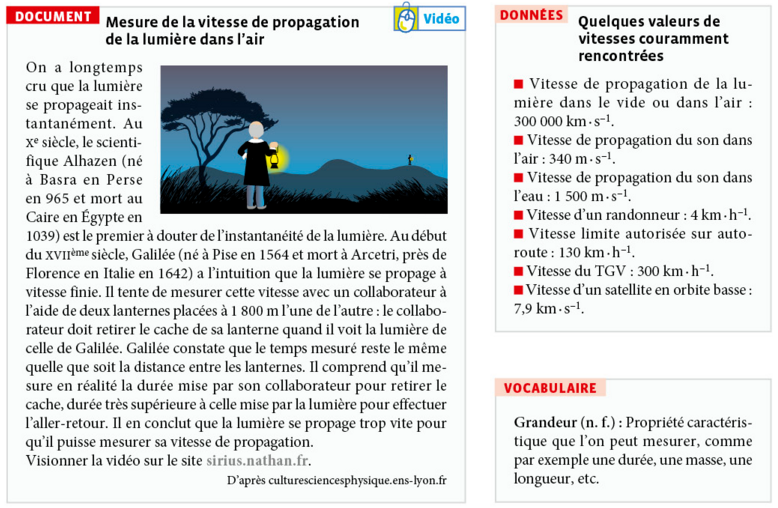
1. S'approprier
a. Citer les deux grandeurs que doit mesurer Galilée pour déterminer la vitesse de propagation de la lumière dans l'air.
b. Parmi ces deux grandeurs, quelle est celle que Galilée n'arrive pas à mesurer ?
2. Réaliser
a. Calculer la durée de propagation de la lumière effectuant l'aller-retour entre les deux lanternes de l'expérience historique de Galilée. Comparer cette durée au temps de réaction des expérimentateurs, estimé à 0,2 s.
b. Calculer la distance à laquelle il faudrait placer les deux lanternes pour que la durée de propagation de la lumière soit six fois plus grande que le temps de réaction.
3. Communiquer (oral)
a. Justifier l'impossibilité pour Galilée de mesurer la vitesse de propagation de la lumière.
b. Compte tenu des différentes vitesses indiquées dans les DONNÉES, justifier que la durée de propagation de la lumière est négligeable devant celle du son ou devant la durée du trajet de tout objet en mouvement sur les parcours courants.
Activité 2 — Indice de réfraction (Activité expérimentale)
Les objectifs des appareils photo comportent un très grand nombre de lentilles. Elles ne sont pas toutes taillées dans le même matériau. La lentille extérieure est généralement en verre ; le matériau qui compose les autres lentilles est choisi en fonction de son indice de réfraction.
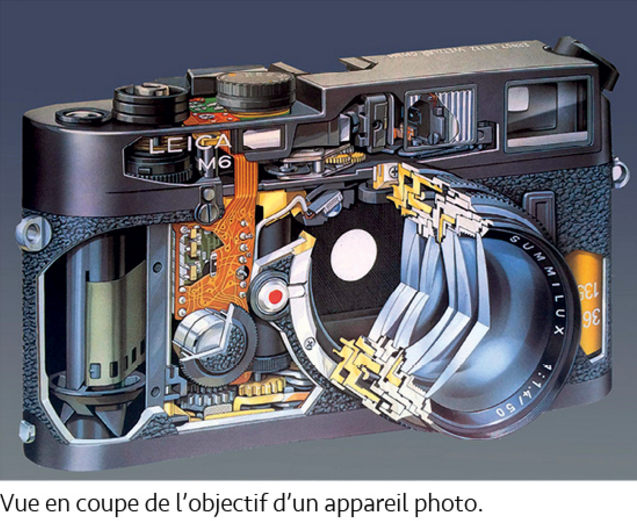
❓ Comment déterminer l'indice de réfraction d'un matériau transparent ?
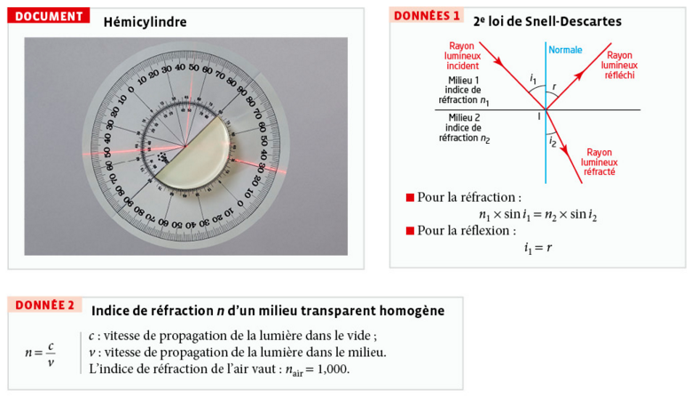
- Choisis le matériau de l'hémicylindre (par exemple verre ou plexiglas) — garde le même matériau pendant toute la série de mesures.
- Règle l'angle d'incidence sur i₁ = 0°, puis relève l'angle de réfraction i₂ affiché ou lu sur le disque gradué.
- Augmente i₁ par pas de 10° (10°, 20°, 30° … jusqu'à 80°) en relevant à chaque fois i₂, et reporte tes valeurs dans le tableau de la question 2 ci-dessous.
🔗 Ouvrir la simulation dans un nouvel onglet
1. Analyser
Proposer un protocole expérimental permettant de déterminer l'indice de réfraction du matériau constituant l'hémicylindre à partir de l'exploitation graphique d'une série de mesures d'angles d'incidence et de réfraction.
2. Réaliser
a. Réaliser les mesures des angles d'incidence et de réfraction à l'aide de la simulation et noter les résultats dans le tableau ci-dessous.
| i₁ (°) | 0 | 10 | 20 | 30 | 40 | 50 | 60 | 70 | 80 |
|---|---|---|---|---|---|---|---|---|---|
| i₂ (°) | |||||||||
| sin(i₁) | |||||||||
| sin(i₂) |
b. En déduire l'indice de réfraction du matériau constituant l'hémicylindre selon la méthode graphique proposée dans le protocole.
Pourquoi chercher le coefficient directeur ? D'après la loi de Snell-Descartes, sin i₂ = (1/n) × sin i₁ : c'est une relation de proportionnalité entre sin i₂ et sin i₁ (pas d'ordonnée à l'origine). Dans le repère (sin i₁ ; sin i₂), les points doivent donc s'aligner sur une droite passant par l'origine, dont le coefficient directeur a est exactement le facteur de proportionnalité 1/n. Déterminer a permet donc de remonter à n — et le fait d'utiliser TOUTES les mesures à la fois (via la droite, ou la régression linéaire) plutôt qu'une seule valeur de i₁/i₂ limite l'effet des erreurs de mesure sur le résultat final.
Tracé (exemple pour un matériau d'indice n = 1,50 — pas tes valeurs mesurées, qui dépendent du matériau choisi dans la simulation) :
Lecture du coefficient directeur : soit graphiquement, en choisissant deux points bien espacés de la droite et en calculant a = Δ(sin i₂) / Δ(sin i₁) ; soit par régression linéaire à la calculatrice (RégLin, voir l'aide ci-dessous), qui donne directement la valeur de a et lisse les petites erreurs de mesure de chaque point. Sur l'exemple ci-dessus, a ≈ 0,667.
Calcul de n : comme sin i₂ = (1/n)·sin i₁, on a a = 1/n, donc n = 1/a. Sur l'exemple ci-dessus : n = 1/0,667 ≈ 1,50. La valeur que tu dois calculer à partir de TES mesures dépend du matériau choisi dans la simulation — pour du verre ou du plexiglas, on doit retrouver n de l'ordre de 1,5.
- Entrer les valeurs de sin(i₁) et sin(i₂) dans le tableur de la calculatrice : touche stats puis modifier, et saisir les valeurs dans les colonnes L1, L2…
- Pour tracer le nuage de points : 2nde puis f(x), puis régler Graph1 en choisissant les listes correspondant aux abscisses (L1 = sin i₁) et aux ordonnées (L2 = sin i₂).
- Pour afficher le graphique à l'échelle : zoom puis 9 (ZoomStat).
- Pour trouver le coefficient directeur de la droite : Stat puis Calc puis RégLin (ax+b), choisir Xliste = L1 et Yliste = L2, puis Calculer. La valeur affichée « a » est le coefficient directeur cherché.
3. Valider
a. Les angles de réfraction sont-ils tous mesurés avec la même précision ? Commenter.
b. Donner la valeur de l'indice de réfraction du matériau constituant l'hémicylindre en choisissant un nombre de chiffres significatifs adapté aux mesures réalisées.
Activité 3 — Déclenchement automatique des essuie-glaces (Activité documentaire)
Toutes les voitures récentes sont équipées d'un détecteur de pluie qui déclenche le fonctionnement des essuie-glaces quand c'est nécessaire.
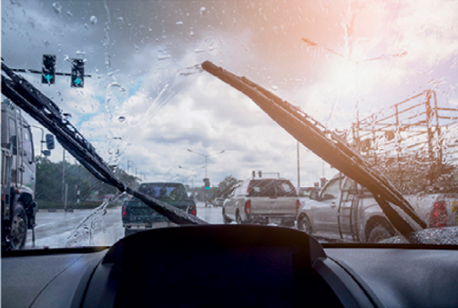
❓ Comment fonctionne l'allumage automatique des essuie-glaces d'une voiture ?
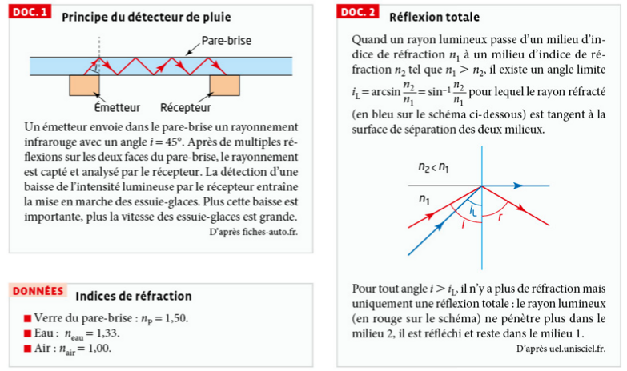
1. Réaliser
a. D'après le DOC.2, calculer l'angle limite de réfraction iL dans le cas du passage verre-air et justifier que sous une incidence i = 45°, le rayonnement infrarouge est totalement réfléchi.
Or l'émetteur envoie le rayonnement infrarouge avec un angle i = 45°, qui est supérieur à cet angle limite (45° > 41,8°). D'après le DOC.2, pour tout angle i > iL, il n'y a plus de réfraction possible : le rayonnement subit une réflexion totale à la surface verre-air. C'est ce qui permet au rayonnement infrarouge de rester « piégé » dans l'épaisseur du pare-brise, en se réfléchissant plusieurs fois, jusqu'à atteindre le récepteur (comme décrit dans le DOC.1).
b. Des gouttes d'eau tombent sur le pare-brise d'une voiture. Montrer qu'il n'y a plus de réflexion totale du rayonnement infrarouge au niveau de la surface de séparation verre-eau.
Cette fois, l'angle d'incidence i = 45° est inférieur à l'angle limite (45° < 62,5°). D'après le DOC.2, la réflexion totale n'existe que pour i > iL : ici, comme i < iL, il y a donc à nouveau de la réfraction à la surface verre-eau — une partie du rayonnement infrarouge n'est plus réfléchie mais s'échappe dans la goutte d'eau. La réflexion totale n'a bien plus lieu dès qu'une goutte d'eau recouvre le pare-brise à cet endroit.
2. Analyser-Raisonner
a. En déduire une justification des deux dernières phrases du DOC.1.
b. Expliquer pourquoi le rayonnement émis par le détecteur de pluie a été choisi dans le domaine de l'infrarouge.
3. Communiquer (oral)
Réaliser une synthèse permettant d'expliquer le fonctionnement de l'allumage automatique des essuie-glaces d'une voiture.
Activité 4 — Dispersion de la lumière par un prisme (Activité documentaire)
Il existe une multitude de sources de lumière, naturelles ou artificielles, blanches ou colorées.
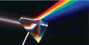
❓ Comment obtenir des renseignements sur ces sources en étudiant la lumière qu'elles émettent ?
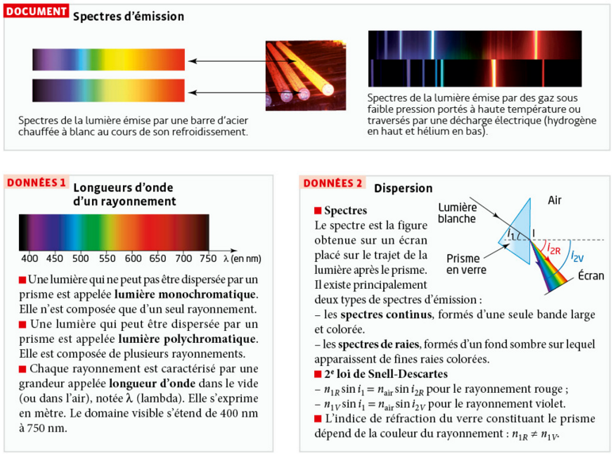
1. Analyser-Raisonner
a. En utilisant les DONNÉES 2, expliquer qualitativement le phénomène de dispersion de la lumière par un prisme.
b. D'après le DOCUMENT, indiquer le type de spectre de la lumière émise par un corps dense et chaud comme l'acier d'une part, par un gaz porté à haute température ou traversé par une décharge électrique d'autre part. Décrire les différences observées entre les deux spectres de chaque type photographiés dans ce document.
2. Réaliser
En utilisant les DONNÉES 1, dessiner le spectre d'émission d'une lumière polychromatique composée de deux rayonnements de longueurs d'onde dans le vide λ' = 475 nm et λ'' = 530 nm.
3. Communiquer (oral)
Réaliser une synthèse permettant d'indiquer les renseignements que l'on peut obtenir sur une source de lumière en étudiant son spectre.
Activité 5 — Dispersion de la lumière par un prisme (Simulation interactive)
Tu as vu dans l'activité précédente que l'indice de réfraction d'un prisme dépend de la couleur de la lumière. Cette animation interactive te permet de vérifier toi-même ce phénomène de dispersion, en réglant l'angle d'incidence, le matériau du prisme et le type de lumière utilisée (monochromatique ou blanche).
❓ Comment la dispersion de la lumière par un prisme dépend-elle de la longueur d'onde et du matériau du prisme ?
- Choisis la matière « Verre flint dense » et la source « Lumière monochromatique ».
- Règle l'angle du rayon incident sur 60° à l'aide du curseur (ou des boutons − / +), et coche la case « Afficher les angles » pour visualiser les valeurs directement sur le schéma.
- Fais varier la longueur d'onde λ de 750 nm (rouge) à 400 nm (violet) avec le curseur « Valeur de la longueur d'onde », et observe comment évoluent l'indice de réfraction n affiché sous le prisme, ainsi que la direction du rayon réfracté en sortie.
- Passe la source sur « Lumière blanche » et observe ce qui sort du prisme.
- Reviens en « Lumière monochromatique » (choisis une longueur d'onde fixe), puis compare successivement les 3 matières proposées (Verre flint dense, Silice fondue, Verre crown dur) : note comment l'indice affiché et la déviation du rayon changent selon le matériau.
- Tu peux également faire varier l'angle du rayon incident pour observer son effet sur la trajectoire du rayon à l'intérieur puis à la sortie du prisme.
🔗 Ouvrir l'animation dans un nouvel onglet
Utilise l'animation ci-dessus (protocole ci-dessus) pour répondre aux 4 questions.
Activité 6 — Mise au point de l'appareil photo d'un smartphone (Activité documentaire)
Pour prendre une photo, un smartphone réalise une mise au point afin que l'image de l'objet formée par la lentille du smartphone soit sur le capteur.
❓ À quoi correspond cette mise au point ?
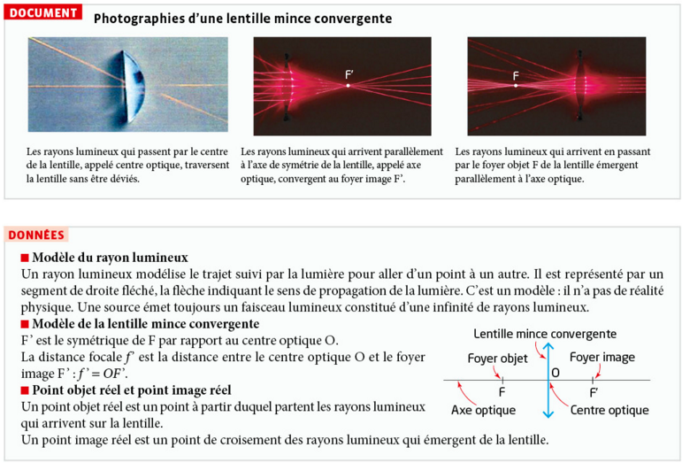
1. Réaliser
a. Au milieu d'une feuille quadrillée placée horizontalement, représenter une lentille mince convergente. Placer les foyers F et F' pour une lentille de distance focale f' = 4,0 cm, ainsi qu'un objet réel AB modélisé par une flèche verticale orientée vers le haut à 12,0 cm à gauche de la lentille. Le point A est sur l'axe optique et AB = 2,0 cm.
b. À l'aide du DOCUMENT, tracer les trois rayons lumineux particuliers issus du point objet B, convergeant après avoir traversé la lentille en un point image B'.
c. Compléter le schéma précédent en plaçant l'image A' du point objet A tel que l'image réelle A'B' soit perpendiculaire à l'axe optique.
d. Mesurer la distance entre la lentille et l'image réelle A'B'.
2. Analyser-Raisonner
a. L'image A'B' est-elle dans le même sens que l'objet AB ou renversée ? Est-elle plus petite ou plus grande que l'objet ?
b. Dans un smartphone, la distance entre la lentille et le capteur ne varie pas. Lorsque l'objet à photographier se rapproche ou s'éloigne, l'appareil photo du smartphone fait la mise au point en modifiant la distance focale de la lentille liquide. Réaliser un deuxième schéma permettant d'expliquer cette mise au point réalisée par le smartphone.
Activité 7 — Image donnée par une lentille mince convergente (Activité expérimentale)
De nombreux instruments (appareil photo, vidéoprojecteur, smartphone) possèdent un objectif permettant d'obtenir l'image réelle d'un objet lumineux sur un écran ou sur son capteur.
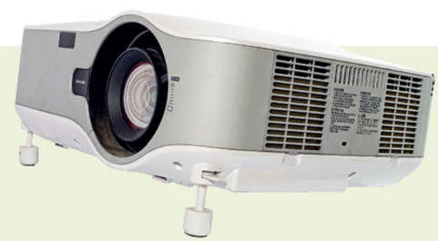
❓ Comment évoluent la position et la taille de l'image formée par l'objectif, modélisé par une lentille mince convergente, quand la position de l'objet change par rapport à l'objectif ?
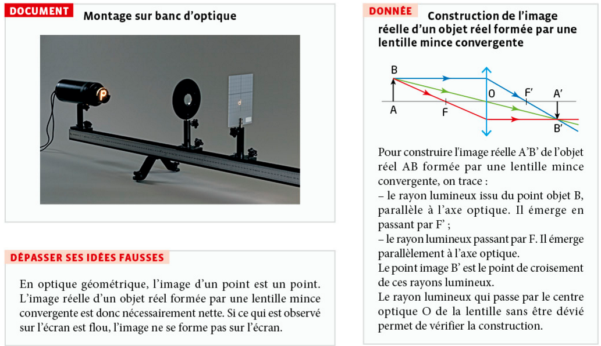
- Dans l'animation, active l'affichage du faisceau lumineux et des valeurs numériques (position, grandissement) proposés dans le menu d'options.
- Règle la distance focale f' de la lentille à l'aide du curseur dédié, et garde cette valeur fixe pendant toute la série de mesures.
- Déplace horizontalement le point A₁ (objet) pour placer successivement l'objet à AO = 4f', 3f', 2f' puis 1,5f' de la lentille (aide-toi de la grille de référence et des valeurs affichées pour te positionner précisément).
- Pour chaque position, relève dans le tableau ci-dessous la position de l'image OA' et le grandissement affiché par l'animation, et note le sens (droite/renversée) et la taille (agrandie/réduite) de l'image observée.
- Utilise le bouton permettant d'envoyer l'objet à l'infini pour observer où se forme l'image dans ce cas particulier.
- Rapproche ensuite progressivement l'objet de la lentille jusqu'à AO = f', puis AO < f', et observe ce qui se passe.
🔗 Ouvrir l'animation dans un nouvel onglet
1. Réaliser
a. Réaliser un montage virtuel similaire à celui du DOCUMENT avec l'animation, en utilisant une lentille mince convergente de distance focale f' de ton choix.
b. Déterminer la position, la taille et le sens de l'image donnée par la lentille dans les quatre cas suivants : AO = 4f' ; AO = 3f' ; AO = 2f' ; AO = 1,5f'. Noter les résultats dans le tableau ci-dessous. Calculer dans chaque cas le grandissement, défini par γ = A'B'/AB.
| Cas | AO = 4f' | AO = 3f' | AO = 2f' | AO = 1,5f' |
|---|---|---|---|---|
| OA' mesurée (en f') | ||||
| Sens de l'image | ||||
| γ = A'B'/AB mesuré |
D'après la relation de conjugaison 1/OA′ − 1/OA = 1/f′ (avec OA négatif car l'objet est à gauche de la lentille), on obtient les valeurs théoriques suivantes, valables quelle que soit la distance focale f' choisie (ce sont des rapports) :
| Cas | AO = 4f' | AO = 3f' | AO = 2f' | AO = 1,5f' |
|---|---|---|---|---|
| OA' théorique | 4/3 f' ≈ 1,33 f' | 3/2 f' = 1,5 f' | 2 f' | 3 f' |
| Sens de l'image | renversée | renversée | renversée | renversée |
| γ = −OA'/OA théorique | −1/3 ≈ −0,33 | −1/2 = −0,5 | −1 | −2 |
Toutes les images sont réelles (l'objet est plus loin que le foyer, AO > f') et renversées. En rapprochant l'objet de la lentille (de 4f' vers 1,5f'), l'image s'éloigne de la lentille et grossit : c'est exactement le principe utilisé par un vidéoprojecteur ou un appareil photo pour faire varier le cadrage.
c. Vérifier expérimentalement que le grandissement est aussi égal à γ = −OA'/OA.
d. Que se passe-t-il si AO < f' ? si AO = f' ?
Si AO < f' (objet entre la lentille et F) : le calcul donne OA' négatif — l'image est virtuelle, du même côté que l'objet ; elle ne peut donc pas se former sur un écran (c'est le principe de la loupe : l'œil regarde alors directement à travers la lentille pour voir cette image virtuelle, agrandie et droite, et non renversée comme dans les cas précédents).
2. Valider
a. Construire, sur un schéma à l'échelle, l'image A'B' formée par la lentille mince convergente d'un objet AB tel que AO = 2f', afin de vérifier que les résultats expérimentaux sont en accord avec le modèle de la lentille mince convergente.
Construction pour AO = 2f' (donc, d'après le tableau de la question 1b, OA' = 2f' également — cas particulier où objet et image sont symétriques par rapport à la lentille) :
On retrouve bien OA = OA' = 2f' (l'objet et l'image sont symétriques par rapport à la lentille) et A'B' = AB avec une image renversée (γ = −1), en accord avec les valeurs théoriques du tableau de la question 1b.
b. À l'aide du schéma, utiliser le théorème de Thalès pour vérifier la formule mathématique donnée dans la question 1.c.
Activité 8 — Modèle de l'œil réduit (Activité documentaire)
L'œil est un récepteur de lumière. C'est le scientifique persan Alhazen (965-1039) qui le premier, au XIe siècle, expliqua la vision par des rayons lumineux pénétrant dans l'œil. En formant sur la rétine les images des objets observés, le cristallin nous permet de voir le monde qui nous entoure.
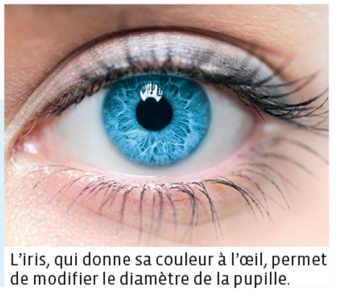
❓ Comment peut-on modéliser l'œil pour mieux comprendre son fonctionnement ?
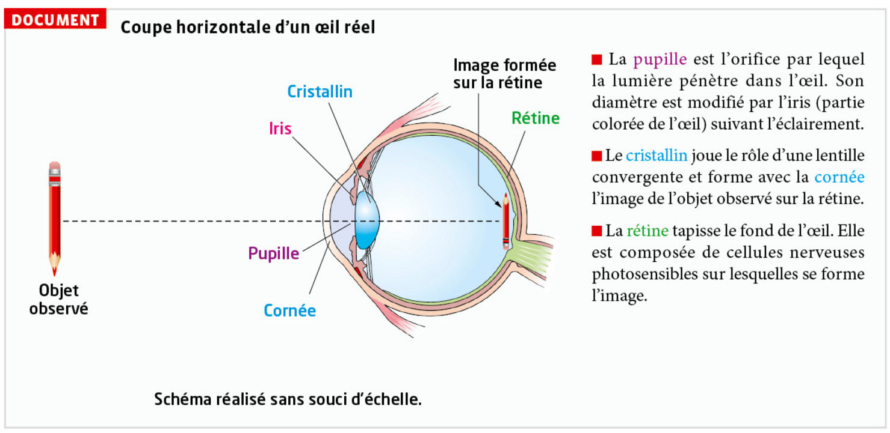
1. Connaître
La lumière permettant de voir le crayon va-t-elle du crayon à l'œil ou de l'œil au crayon ?
2. S'approprier
a. Comparer le sens et la taille de l'image du crayon formée sur la rétine à ceux du crayon.
b. Citer les milieux transparents responsables de la réfraction des rayons lumineux qui pénètrent dans l'œil.
c. Indiquer le rôle de la rétine et celui de l'iris. Comment varie le diamètre de la pupille quand la luminosité diminue ?
3. Réaliser
Réaliser un schéma comportant un diaphragme, une lentille mince convergente et un écran pour modéliser l'œil. Préciser le rôle de chaque partie en correspondance avec l'œil réel.
Modèle réduit de l'œil, avec la correspondance élément réel ↔ élément du modèle :
| Élément du modèle | diaphragme | lentille convergente | écran |
|---|---|---|---|
| Élément réel de l'œil | iris / pupille | cristallin (+ cornée) | rétine |
4. Analyser-Raisonner
a. Indiquer où se trouve le foyer image de la lentille convergente quand l'œil observe un objet à l'infini.
b. La distance entre le cristallin et la rétine est constante puisque l'œil réel ne se déforme pas. Justifier, en utilisant le modèle de la lentille mince convergente et à l'aide d'un schéma si nécessaire, que la distance focale du cristallin doit diminuer pour que l'image reste toujours sur la rétine si le crayon se rapproche de l'œil.
C'est exactement le mécanisme d'accommodation déjà rencontré en Activité 6 (mise au point du smartphone) : dans l'œil réel, les muscles ciliaires bombent davantage le cristallin quand l'objet se rapproche, ce qui diminue sa distance focale f′, afin que l'image reste nette exactement sur la rétine.
📐 Construction d'image par une lentille convergente
Simulateur interactif Hatier (niveau 2nde, p.279) : construis l'image donnée par une lentille convergente directement ci-dessous, schémas et corrections inclus.
🔗 Ouvrir le simulateur dans un nouvel onglet
Activités complémentaires (ressource Hatier, niveau 1re) — clique sur un élément de la liste ci-dessous pour ouvrir l'activité correspondante :
- Échauffements
Lentille convergente. - Rayons particuliers
Quelques rappels... - Méthode de Bessel
Distance focale d'une lentille convergente. - Nature d'une image
Taille et position de l'image ; grandissement. - Taille et position d'une image
Image réelle / image virtuelle. - Taille et position d'un objet
Quel objet pour quelle image ? - Une loupe
Caractéristiques de l'image.
Exercice 1 — Propagation de la lumière
Énoncé
Un éclair est observé, puis le tonnerre est entendu 4,5 s plus tard.
- Pourquoi voit-on l'éclair avant d'entendre le tonnerre ?
- Calculer la distance de l'éclair. On donne la vitesse du son dans l'air : vson = 340 m·s⁻¹.
- La lumière met-elle un temps notable pour parcourir cette distance ? Justifier avec c = 3,00 × 10⁸ m·s⁻¹.
Exercice 2 — Réfraction (Snell-Descartes)
Énoncé
Un rayon lumineux passe de l'air (n1 = 1,00) dans l'eau (n2 = 1,33) avec un angle d'incidence i1 = 35°.
- Écrire la relation de Snell-Descartes applicable.
- Calculer l'angle de réfraction i2. Le rayon se rapproche-t-il ou s'éloigne-t-il de la normale ?
- Même question si le rayon passe cette fois de l'eau vers l'air.
Exercice 3 — Spectre de raies du sodium
Énoncé
On analyse la lumière émise par une lampe à vapeur de sodium et on observe un spectre de raies. Les deux raies jaunes du sodium sont situées à λ₁ = 589,0 nm et λ₂ = 589,6 nm.
- Ce spectre est-il un spectre continu ou un spectre de raies ? Justifier.
- À quel domaine du spectre électromagnétique appartiennent ces deux radiations ?
- Un astronome observe le spectre d'une étoile et retrouve le même doublet jaune, mais décalé vers λ = 600 nm. Que peut-il en déduire ?
Exercice 4 — Lentille convergente
Énoncé
Une bougie (objet AB) est placée à OA = −30 cm d'une lentille convergente de distance focale f' = 10 cm. La flamme mesure AB = 3 cm.
- Calculer la position OA' de l'image.
- Calculer le grandissement γ. L'image est-elle droite ou renversée ? Agrandie ou réduite ?
- Calculer la taille A'B' de l'image.
- L'image est-elle réelle ou virtuelle ? Justifier.
Exercice 5 — Observer le coucher du Soleil
Avant d'arriver jusqu'à nos yeux, la lumière du Soleil traverse le vide de l'espace puis pénètre dans l'atmosphère. L'air ayant un indice très légèrement supérieur à 1, la lumière subit une réfraction en pénétrant dans l'atmosphère.
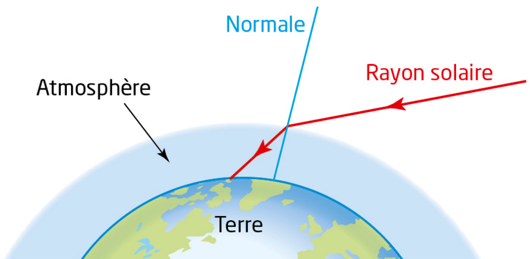
Justifier sans calcul que lorsqu'on voit le Soleil se coucher, il est en réalité en dessous de l'horizon.
Exercice 6 — Légender un schéma de l'œil
Compléter les légendes du schéma ci-dessous (1, 2, 3, 4 et 5) représentant la coupe horizontale d'un œil.
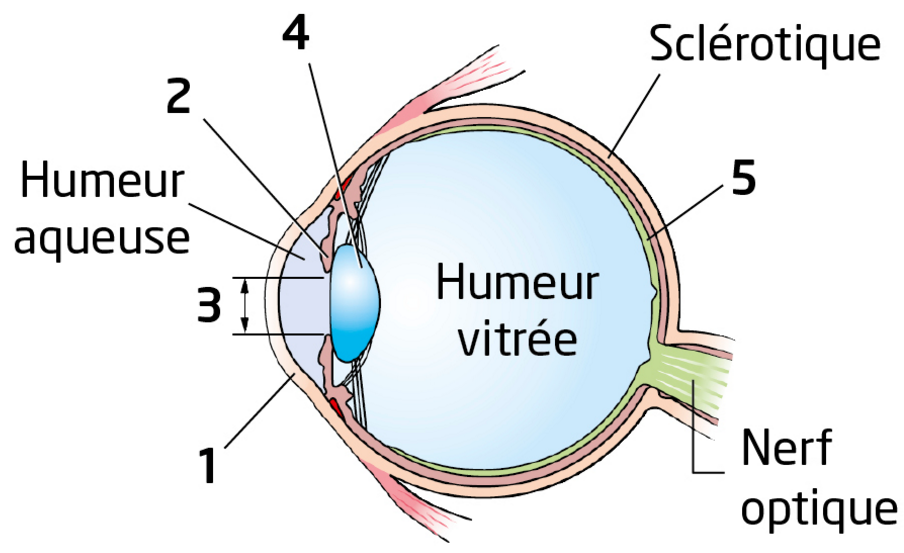
Associer à chaque numéro le nom de la structure correspondante.
2 — Iris : diaphragme coloré qui entoure la pupille et règle la quantité de lumière entrante.
3 — Pupille : ouverture centrale de l'iris, par laquelle la lumière pénètre à l'intérieur de l'œil.
4 — Cristallin : lentille convergente déformable, qui accommode pour faire converger la lumière sur la rétine.
5 — Rétine : membrane photosensible tapissant le fond de l'œil, où se forme l'image et où naît le message nerveux transmis par le nerf optique.
Exercice 1 — Comparer des valeurs de vitesse (éclair et tonnerre)
Lors d'un orage, on voit l'éclair avant d'entendre le tonnerre.
a. Citer la valeur de la vitesse de propagation c de la lumière dans le vide et dans l'air.
b. Comparer la valeur de la vitesse de propagation c de la lumière à celle du son dans l'air v = 340 m·s⁻¹.
c. Expliquer pourquoi on voit l'éclair avant d'entendre le bruit du tonnerre lors d'un orage.
d. La durée qui sépare la perception de l'éclair de celle du tonnerre peut-elle nous renseigner sur la distance qui nous sépare de l'orage ?
Exercice 2 — Calculer un indice et une vitesse (verres de lunettes)
Les verres des lunettes sont d'autant plus épais que le défaut à corriger (myopie ou hypermétropie) est important. Pour diminuer l'épaisseur des verres de lunettes, les fabricants utilisent des verres à fort indice de réfraction. Lors d'un test, le passage d'un rayon lumineux de l'air vers le verre, à un angle d'incidence i₁ = 60,0°, est mesuré pour un angle de réfraction i₂ = 30,0°.
a. En utilisant la 2ᵉ loi de Snell-Descartes, calculer l'indice de réfraction n₂ du verre des lunettes.
Formule
Calcul
Résultat
b. En déduire la vitesse de propagation v de la lumière dans le verre des lunettes.
Formule
Calcul
Résultat
Exercice 3 — Disperser la lumière blanche (prisme de Newton)
Isaac Newton (1642-1727) a utilisé un prisme pour comprendre la dispersion de la lumière blanche observée dans les arcs-en-ciel.
Les indices de réfraction du prisme varient suivant la couleur du rayonnement qui le traverse :
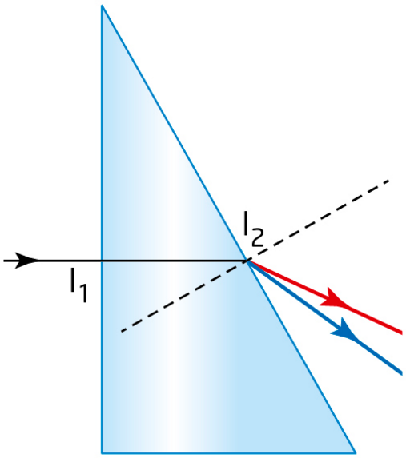
a. Pourquoi le rayon lumineux n'est-il pas dévié au point I₁ ?
b. Décrire et expliquer qualitativement le phénomène de dispersion de la lumière par un prisme.
Exercice 4 — Convertir en unités S.I.
Quand l'œil observe un objet lointain, le cristallin est au repos. Il a alors une distance focale f' = 17,0 mm.
a. Calculer la vergence C du cristallin au repos.
Formule
Calcul
C = 1 / 0,0170
Résultat
b. Quand l'œil observe un objet proche, la vergence du cristallin augmente. Calculer la nouvelle distance focale f'' du cristallin si sa vergence augmente d'une dioptrie (1 δ).
Formule
Calcul
f'' = 1 / 59,8
Résultat
Exercice 5 — Identifier un spectre
Les spectres de raies d'émission des gaz sodium et mercure sont les suivants. Sachant que la couleur de la lumière émise par une lampe à sodium est orangée et que la couleur émise par une lampe à mercure est bleutée, attribuer chaque spectre à la lampe correspondante. Justifier la réponse.
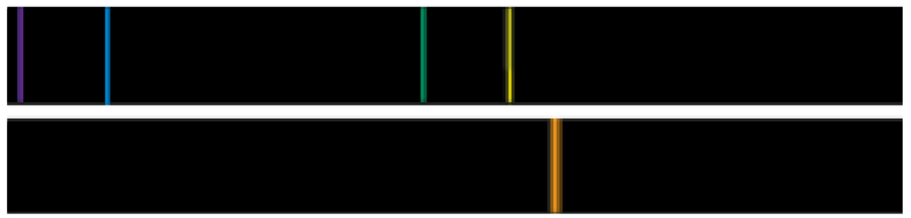
Attribuer chaque spectre à la lampe correspondante et justifier la réponse.
Exercice 6 — Disperser la lumière à l'aide d'un prisme
Un faisceau lumineux magenta, constitué de deux rayonnements monochromatiques rouge et bleu, arrive perpendiculairement sur la face d'un prisme en verre.
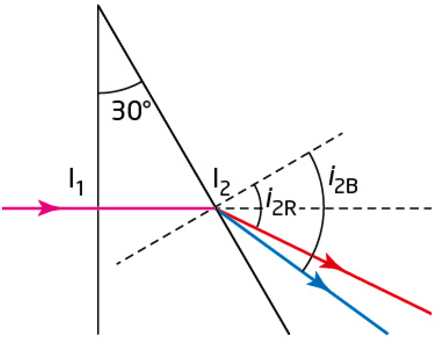
1. Montrer que l'angle d'incidence en I₂ sur la deuxième face du prisme est égal à 30,0°.
Raisonnement
Calcul
Résultat
2. Calculer les valeurs i2R et i2B de l'angle de réfraction pour les deux rayonnements rouge et bleu.
Formule
Calcul — rayon rouge
Calcul — rayon bleu
Résultats
3. Les positions respectives des rayons émergeants rouge et bleu sur le schéma ci-contre sont-elles conformes aux résultats ?
Exercice 7 — Pêcheur à la ligne
Un pêcheur à la ligne observe les poissons depuis la berge pour lancer sa ligne le plus près possible du poisson qu'il souhaite pêcher.
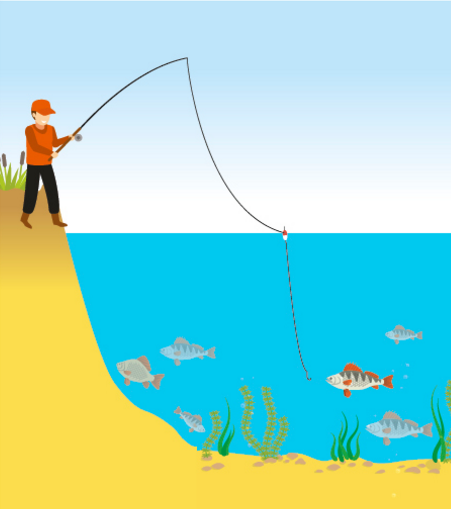
a. Schématiser le pêcheur, le poisson rouge et la surface de séparation eau-air et représenter sans souci de précision mais de façon cohérente un rayon lumineux issu du poisson rouge pénétrant dans l'œil du pêcheur.
b. Le pêcheur voit-il le poisson dans la direction où il se trouve réellement ?
Exercice 1 — Planète Mars
Énoncé
Le 27 juillet 2018, la planète Mars est passée au plus près de la Terre depuis 15 ans. La distance Terre-Mars était alors de 57,6 millions de km.
- Calculer la durée mise par la lumière diffusée par Mars pour arriver sur la Terre le 27 juillet 2018.
- Comparer avec la durée d'environ 6 mois nécessaire à une mission spatiale pour aller sur Mars.
Exercice 2 — Mise au point
Énoncé
L'objectif d'un appareil photo porte l'inscription 50 mm, qui correspond à la distance focale de son objectif, pouvant être modélisé par une lentille mince convergente.
- Indiquer la distance qui sépare le capteur de l'objectif lorsqu'on photographie un paysage.
- On souhaite maintenant photographier un visage placé à 1,0 m de l'objectif.
- La distance centre optique de l'objectif-image est-elle plus petite ou plus grande que la distance focale de l'objectif quand l'objet est proche de l'objectif ?
- En déduire s'il faut approcher ou éloigner l'objectif du capteur pour faire la mise au point.
Exercice 3 — Accommodation de l'œil
Le schéma ci-dessous représente le modèle de l'œil réduit et deux objets A1B1 et A2B2.
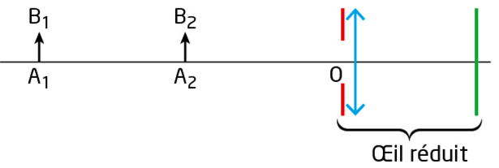
a. Où se forme l'image d'un objet lorsque cet objet est vu net par l'œil ?
b. En utilisant le rayon lumineux qui passe par le centre optique de la lentille, construire sur le même schéma les images A1'B1' de l'objet A1B1 et A2'B2' de l'objet A2B2.
c. En utilisant un autre rayon, déterminer les positions des deux foyers image de la lentille pour les deux positions de l'objet.
d. Comment évolue la distance focale de la lentille quand un objet AB s'approche de l'œil ?
e. Dans un œil réel, cette évolution provient de la déformation du cristallin. Expliquer comment est modifiée la forme du cristallin quand un objet s'approche de l'œil.
Exercice 4 — Photographie du phare de l'île Vierge
Lors d'un voyage en Bretagne, un touriste souhaite photographier le phare de l'île Vierge, plus haut phare d'Europe, avec un appareil photo dont l'objectif a une distance focale f' = 50,0 mm. Il se place de telle sorte que l'image du phare occupe pratiquement toute la hauteur du capteur lorsqu'il tient son appareil horizontalement. Dans ces conditions, l'image mesure 20,0 mm de hauteur.
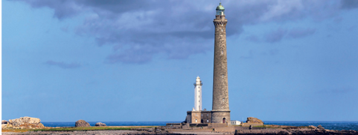
a. L'image obtenue sur le capteur est-elle dans le même sens que l'objet ou renversée ? Justifier.
b. Dans ces conditions, le grandissement est-il positif ou négatif ? Calculer sa valeur absolue sachant que le phare de l'île Vierge mesure 82,5 m de hauteur.
|γ| = |A'B'| / |AB| = 20,0×10⁻³ / 82,5 = 2,42 × 10⁻⁴
Donc γ ≈ −2,42 × 10⁻⁴.
c. On fait l'hypothèse que le phare est suffisamment éloigné de l'appareil pour qu'on puisse le considérer à l'infini. Que vaut alors la distance objectif-capteur ?
1/OA' = 1/f' + 0 → OA' = f' = 50,0 mm
La distance objectif-capteur vaut donc 50,0 mm.
d. Déduire des réponses aux questions précédentes la distance phare-appareil et vérifier que l'hypothèse faite est légitime.
OA = OA' / γ = 50,0 / (−2,42×10⁻⁴) ≈ −2,07 × 10⁵ mm ≈ −207 m
Le phare se trouve donc à environ 207 m de l'appareil photo.
Vérification de l'hypothèse : cette distance (207 m) est en effet très grande devant la distance focale (50,0 mm, soit 0,050 m) : le rapport f'/OA ≈ 0,050/207 ≈ 2,4×10⁻⁴ est totalement négligeable. En recalculant OA' exactement avec cette valeur d'OA, on retrouve une valeur quasiment identique à 50,0 mm (écart inférieur à 0,03 %). L'hypothèse « phare à l'infini » est donc parfaitement légitime.
Exercice 5 — « Physics is phun »
Décrire et expliquer le phénomène physique photographié ci-dessous en utilisant un vocabulaire scientifique adapté.
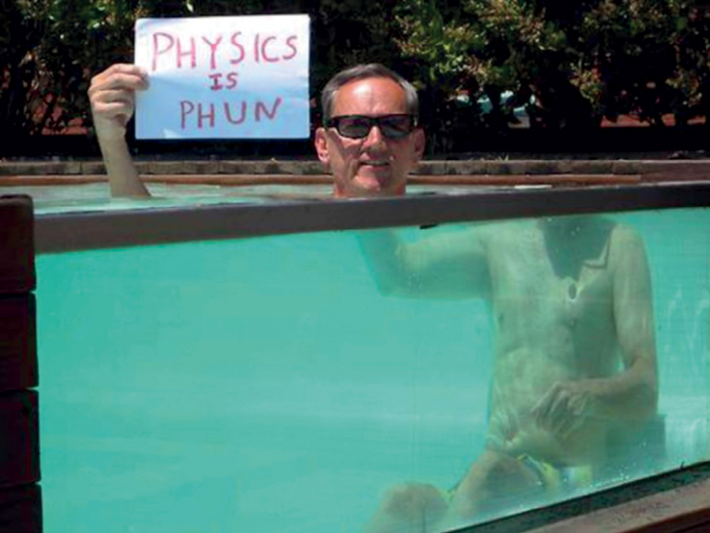
Prépare une réponse orale décrivant et expliquant le phénomène observé sur la photographie.
2. Teinte verdâtre de la partie immergée (absorption sélective) : l'eau absorbe la lumière de façon sélective selon la longueur d'onde : les grandes longueurs d'onde (rouge, orange) sont absorbées plus rapidement que les courtes (bleu, vert) au fur et à mesure que la lumière traverse une épaisseur d'eau. La partie du corps observée sous l'eau apparaît donc teintée de vert-bleu, les couleurs chaudes ayant été en grande partie absorbées.
Vocabulaire attendu à l'oral : réfraction, indice de réfraction, changement de milieu, lois de Snell-Descartes, normale, angle d'incidence/de réfraction, absorption sélective, longueur d'onde.
Exercice 6 — Observation de l'image du Soleil sur un écran
Énoncé
Un enfant possède deux lentilles minces convergentes de distances focales f'1 = 80,0 cm et f'2 = 20,0 cm. Il désire fabriquer une lunette astronomique pour observer le Soleil en projetant son image sur un écran, car il sait qu'il ne faut jamais regarder directement le Soleil.
Document — Lunette astronomique : une lunette astronomique est un instrument d'optique destiné à observer le ciel. On peut la modéliser à l'aide de deux lentilles minces convergentes : une lentille L₁ de grand diamètre et de grande distance focale f'₁, qui sert d'objectif ; une lentille L₂ de diamètre quelconque et de petite distance focale f'₂, qui sert d'oculaire. Les deux lentilles ont le même axe optique et l'oculaire peut se déplacer par rapport à l'objectif sur cet axe.
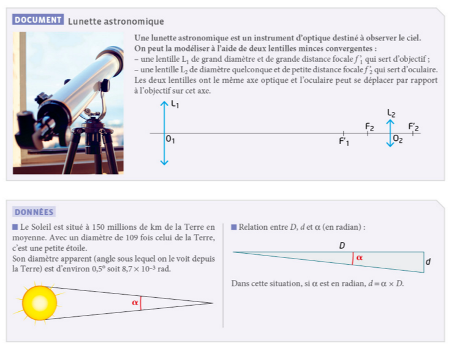
1. Quelle lentille l'enfant doit-il utiliser pour l'objectif de sa lunette ? Justifier la réponse.
2. Sur une feuille quadrillée placée horizontalement, réaliser le schéma de la lunette à l'échelle 1/10 horizontalement. On placera la deuxième lentille de telle sorte que les centres optiques O₁ et O₂ soient distants de 11,0 cm.
Conversion à l'échelle 1/10
f'₁ = 80,0 cm → 8,00 cm sur la feuille
f'₂ = 20,0 cm → 2,00 cm sur la feuille
3. Soit AB l'axe vertical du Soleil, supposé situé à l'infini. AB sert d'objet pour l'objectif de la lunette qui en donne une image A1B1. Le point A est sur l'axe optique et le point B dans une direction telle que l'image A1B1 formée par l'objectif mesure la taille attendue. Où se situe l'image A1B1 ? La construire sur le schéma.
4a. L'image A1B1 sert d'objet pour l'oculaire qui en donne une image A'B'. Construire l'image A'B' sur le même schéma.
4b. Déterminer graphiquement le grandissement γ de l'oculaire.
Position de l'image A'B'
O₂A' ≈ 15,5 cm
Grandissement
4c. En utilisant les données de l'énoncé, calculer la taille réelle de l'image A1B1 puis celle de l'image A'B'.
Taille de A₁B₁
Taille de A'B'
Si le jeu ne s'affiche pas correctement dans le cadre ci-dessus (petit écran, tablette...), utilisez le lien plein écran.
Propagation de la lumière
- Propagation rectiligne dans un milieu transparent et homogène
- c = 3,00 × 10⁸ m·s⁻¹ dans le vide (valeur max. de vitesse)
- Indice de réfraction n = c / v, avec n ≥ 1 toujours
Lois de Snell-Descartes
- Réflexion : ir = i1
- Réfraction : n1·sin i1 = n2·sin i2
- Angles mesurés par rapport à la normale au point d'incidence
Dispersion et spectres
- Lumière blanche = polychromatique (superposition de radiations)
- n dépend de λ → dispersion par un prisme (violet plus dévié que rouge)
- Lumière monochromatique caractérisée par sa longueur d'onde λ
- Domaine visible ≈ 400–800 nm, encadré par l'UV et l'IR
Lentilles convergentes
- Foyers F et F' symétriques par rapport au centre optique O : OF = OF' = f'
- Grandissement : γ = A'B' / AB = OA' / OA
- Construction géométrique de l'image avec 2 rayons particuliers
Modèle réduit de l'œil
- Cornée + cristallin ≈ lentille convergente
- Rétine ≈ écran, à distance fixe du cristallin
- Accommodation : le cristallin fait varier f' pour former l'image sur la rétine
- Absorption sélective
- Phénomène par lequel un milieu absorbe la lumière différemment selon sa longueur d'onde ; par exemple, l'eau absorbe davantage les grandes longueurs d'onde (rouge, orange) que les courtes (bleu, vert), ce qui donne une teinte bleu-vert aux objets vus sous l'eau.
- Accommodation
- Mécanisme par lequel le cristallin change de courbure (donc de distance focale f') pour que l'image d'un objet se forme nette sur la rétine, quelle que soit la distance de l'objet.
- Angle d'incidence / de réfraction
- Angles i₁ et i₂ formés entre les rayons incident/réfracté et la normale.
- Célérité de la lumière c
- Vitesse de la lumière dans le vide : c = 3,00 × 10⁸ m·s⁻¹. C'est la vitesse maximale possible.
- Centre optique O
- Point de la lentille traversé par tout rayon lumineux sans déviation.
- Cornée
- Membrane transparente et bombée à l'avant de l'œil, première structure traversée par la lumière ; elle participe à la convergence des rayons lumineux.
- Cristallin
- Lentille biconvexe naturelle et déformable de l'œil, dont la courbure varie sous l'action des muscles ciliaires.
- Dispersion
- Séparation des différentes radiations d'une lumière polychromatique par un système dispersif (prisme, réseau), car n dépend de λ.
- Distance focale f'
- Distance OF' entre le centre optique et le foyer image, caractéristique de la lentille (en mètres).
- Foyers F et F'
- Foyer image F' : point où converge un faisceau de rayons incidents parallèles à l'axe optique. Foyer objet F : symétrique de F' par rapport à O.
- Grandissement γ
- Rapport γ = A'B' / AB = OA' / OA, sans dimension. Il donne le sens (signe) et la taille relative de l'image par rapport à l'objet.
- Humeur aqueuse
- Liquide transparent qui remplit l'espace entre la cornée et le cristallin.
- Humeur vitrée
- Substance gélatineuse et transparente qui remplit l'espace entre le cristallin et la rétine, à l'arrière de l'œil.
- Image réelle
- Image qui se forme effectivement sur un écran, à l'intersection réelle des rayons lumineux émergents.
- Indice de réfraction n
- Grandeur sans dimension caractérisant un milieu transparent : n = c / v, toujours n ≥ 1.
- Infrarouge (IR)
- Rayonnement de longueur d'onde supérieure à celle du rouge visible (λ > 800 nm environ), invisible à l'œil.
- Iris
- Diaphragme coloré qui entoure la pupille et règle, en se contractant ou se dilatant, la quantité de lumière entrant dans l'œil.
- Lentille convergente
- Lentille plus épaisse au centre qu'aux bords, qui fait converger un faisceau de rayons parallèles vers un point.
- Longueur d'onde λ
- Grandeur caractéristique d'une radiation monochromatique, exprimée en nanomètres (nm) dans le domaine visible.
- Lumière monochromatique
- Lumière constituée d'une seule radiation, caractérisée par une longueur d'onde λ unique.
- Lumière polychromatique
- Lumière constituée de plusieurs radiations de longueurs d'onde différentes ; la lumière blanche en est un exemple.
- Modèle réduit de l'œil
- Modélisation de l'œil par une lentille convergente (cornée + cristallin) associée à un écran (rétine) à distance fixe.
- Nerf optique
- Nerf qui transmet le message nerveux de la rétine jusqu'au cerveau, permettant la formation des sensations visuelles.
- Normale
- Droite perpendiculaire à la surface au point d'incidence, servant de référence pour mesurer les angles.
- Propagation rectiligne
- Dans un milieu transparent et homogène, la lumière se propage en ligne droite.
- Pupille
- Ouverture centrale de l'iris, par laquelle la lumière pénètre à l'intérieur de l'œil.
- Réflexion
- Renvoi d'un rayon lumineux par une surface, avec un angle de réflexion égal à l'angle d'incidence : ir = i1.
- Réfraction
- Changement de direction d'un rayon lumineux en traversant la surface séparant deux milieux transparents différents.
- Rétine
- Membrane photosensible au fond de l'œil, jouant le rôle d'écran dans le modèle réduit ; elle transmet le signal lumineux au cerveau.
- Sclérotique
- Membrane blanche, résistante et opaque qui forme l'enveloppe externe de l'œil et le protège.
- Spectre lumineux
- Ensemble des radiations composant une lumière, observées après dispersion (spectre continu ou spectre de raies).
- Théorème de Thalès (optique)
- Outil mathématique utilisé pour établir la relation de grandissement γ = OA' / OA à partir des triangles semblables formés par les rayons lumineux.
- Ultraviolet (UV)
- Rayonnement de longueur d'onde inférieure à celle du violet visible (λ < 400 nm environ), invisible à l'œil.
- Vergence
- Grandeur qui caractérise la capacité d'une lentille (ou de l'œil) à faire converger la lumière : C = 1 / f', avec f' en mètres. Elle s'exprime en dioptries (δ), unité inverse du mètre.
🔬 PhET — Réfraction de la lumière (Bending Light)
Simulation interactive, en français.
🔬 PhET — Optique géométrique (lentilles)
Simulation interactive, en français.
🔬 Ostralo — Construction d'image par une lentille
Simulation interactive.
🔬 PCCL — Réfraction et dispersion par un prisme
Animation interactive.
🔬 PCCL — Réfraction et loi de Descartes
Animation interactive.
🔬 PCCL — Dispersion, prisme & spectres d'émission/absorption
Animation interactive.
🔬 PCCL — Lentille mince convergente, construction d'image
Animation interactive.
🔬 PhET — Optique géométrique (version simplifiée)
Simulation interactive, en français.
🔬 Simulateur de lentille (p.279)
Hatier.
🔬 Simulation interactive C16 (2)
Hatier.
🔬 PCCL — Propagation de la lumière
Sources primaires et secondaires, ombres portées et propres.
🔬 Ostralo — Lois de Descartes
Réflexion et réfraction, mesure des angles, indice de réfraction.
🔬 Ostralo — Spectres d'émission et d'absorption
Signature spectrale de différents atomes.
🔬 PCCL — Lentille convergente
Construction graphique de l'image, rayons caractéristiques.
📝 QCM diagnostic — chap. 14
Hatier.
📝 QCM diagnostic — chap. 15
Hatier.
📝 QCM diagnostic — chap. 16
Hatier.
📝 QCM de maîtrise des notions — chap. 14
Hatier.
📝 QCM de maîtrise des notions — chap. 15
Hatier.
📝 QCM de maîtrise des notions — chap. 16
Hatier.
🗂️ Flashcards interactives
Hatier.
📘 Cours & exercices corrigés
PCCL — Lentilles, œil, réfraction, dispersion.
🎮 Légender le schéma de l'œil
Hatier.
🕹️ Jeu — Œil et vision
Légender le modèle réduit de l'œil et construire l'image formée par une lentille convergente.
🎥 Spectres continus et température — Exercice
Paul Olivier, 4 min 27.
🎥 Spectres d'émission — Cours + Exercice
Paul Olivier, 6 min 28.
🎥 Réflexion et réfraction de la lumière
Paul Olivier, 4 min 49.
🎥 Lentille : construction image et grandissement
Paul Olivier, 6 min 38.
🎥 Lentille : tracé des rayons lumineux
Paul Olivier, 3 min 34.
🎥 Lentille mince convergente
Paul Olivier, 3 min 27.
🎥 Construction de l'image d'un objet par une lentille
Paul Olivier, 3 min 51.
🎥 Lentille mince convergente — 2/3 : Grandissement
PCCL, 4 min 41.
🎥 Lentille convergente — 3/3 : Modèle de l'œil
PCCL, 4 min 26.
🎥 Lentilles et modèle de l'œil
Hatier, 3 min 52.